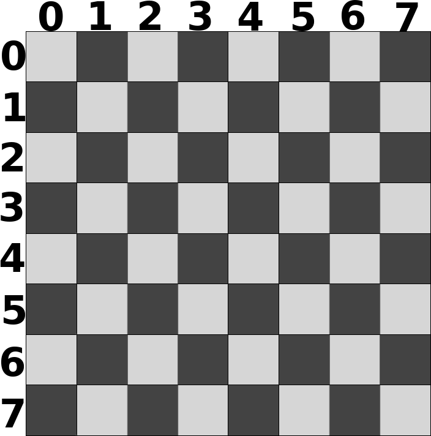

Taules¶
A Java podem definir un array de diferents tipus de dades.
Per exemple:
char[] vocalsLlatines = {'a', 'e', 'i', 'o', 'u' };
String[] colors = { "vermell", "groc", "verd" };
int[] notesCurs = {10, 9, 8, 9, 9, 10, 10};
Podríem definir un array d’arrays? La resposta és sí.
Un taulell d’escacs¶
Per exemple, imagina que volem representar un taulell d’escacs. Els
taulells d’escacs tenen 64 cel·les en una taula de 8 x 8. A cada cel·la hi
podríem codificar el seu contingut amb la inicial de la peça que conté
([R]ei, [D]ama, [A]lfil, [C]avall, [T]orre, [P]eó)
o un puntet · si no hi ha res. Com que tenim peces blanques i
negres, les blanques podrien tenir la lletra en minúscules i les negres en
majúscules.
El taulell el podem representar per un array de files, i per cada fila, un array de les columnes de la fila:
Per declarar una estructura que pugui contenir aquestes dades, podem fer:
char[][] taulell; // files x columnes
És important entendre que de moment no s’ha creat espai per cap caràcter!
Per aconseguir aquest espai, podem fer el següent:
taulell = new char[8][8];
Ara sí! Un cop inicialitzat taulell, estarà apuntant a una posició de
memòria que disposa de 8 x 8 caràcters.
Una casella¶
Per a accedir a una posició concreta d’aquest taulell, ho fem amb una
notació molt similar a la que fèiem amb arrays. Per exemple, la fila 3
columna 4 correspondria a taulell[3][4].
L’expressió taulell[3][4] és de tipus char.
Perquè sabem que és taulell[3][4] i no taulell[4][3]? Doncs
bàsicament perquè ho diu el comentari (// files x columnes)
Perfectament ho podríem haver representat a l’inrevés!
Quin valor tindrà la posició taulell[3][4] ara mateix? La resposta és
el caràcter 0. Java està inicialitzant per nosaltres els valors de cada
posició dins de la taula. En concret, li posa un valor base que resulta
en 0 per la majoria dels primitius (false en cas de boolean) o bé
un valori,de moment misteriós, anomenat null pels tipus no primitius
com ara els Strings.
És a dir, de moment, la següent expressió és certa:
taulell[3][4] == 0
Suposem que hi volem assignar un valor, per exemple, col·locar-li un peó
blanc. Recordem que hem decidit codificar el peó blanc amb el caràcter
'p'. El següent codi inicialitza adequadament aquesta posició
correctament:
taulell[3][4] = 'p';
En canvi, si hi volem indicar que no hi ha cap peça, hi posarem el puntet així:
taulell[3][4] = '·';
Tota una fila¶
De fet, podem parlar de la fila 3, incloent totes les columnes, amb
taulell[3].
El tipus de l’expressió taulell[3] és char[] (un array de
caràcters) que està inicialitzat a 8 caràcters! De fet, és perfectament
vàlid fer la següent assignació:
taulell[3] = new char[8];
Podem indicar que tota la fila 3 està buida (sense peces) fent el següent codi:
for (int columna = 0; columna < 8; columna++) {
taulell[3][columna] = '·';
}
És a dir, per la fila 3 anem passant de columna en columna i assignant-li el puntet que marca la casella buida.
Tot el taulell¶
Què passaria si el que volem és inicialitzar tot el taulell com buit? Doncs haurem de fer el que hem fet per la fila 3 però per totes les files:
for (int fila = 0; fila < 8; fila++) {
for (int columna = 0; columna < 8; columna++) {
taulell[fila][columna] = '·';
}
}
I si volem mostrar el taulell?
for (int fila = 0; fila < 8; fila++) {
for (int columna = 0; columna < 8; columna ++) {
System.out.print(taulell[fila][columna]);
}
System.out.println();
}
Per descomptat, amb tot el taulell buit, ens mostrarà un quadrat de punts:
········
········
········
········
········
········
········
········
Si bé no queda tan maco com els diagrames, aquesta representació ens permet continuar treballant amb la sortida estàndard de Java.

{kind=link}
{kind=link}
{kind=link}
Varietat en els arrays d’arrays¶
El nostre taulell d’escacs és força còmode doncs tenim el mateix nombre de files que de columnes.
El món no sempre resulta tan fàcil, i hi podem trobar moltes variacions. Veiem algunes.
Quan el nombre de files i de columnes són diferents¶
Per exemple, considera una estructura que hagi de guardar les notes d’una assignatura per cadascun dels estudiants. Suposem que tenim 30 alumnes i 6 notes, i que les notes són valors enters. La declaració vindria a ser:
int[][] notes = new int[30][6]; // alumne x nota
Quan el nombre de columnes és diferent entre files¶
Per exemple, considera una estructura que guardi els noms dels fills dels diferents empleats de la companyia. Si tenim 100 empleats, i l’empleat 5 en té 3, l’empleada 12 cap i l’empleada 21 en té un, ho podríem codificar tot plegat com:
Per exemple, considera el següent codi:
public class Fills {
public static void main(String[] args){
String[][] nomsFills= new String[100][];
nomsFills[5] = new String[] {"Daphne", "Velma", "Fred"};
nomsFills[12] = new String[] {};
nomsFills[21] = new String[] {"Shaggy"};
for (int empleat = 0; empleat < nomsFills.length; empleat++) {
if (null == nomsFills[empleat]) continue;
System.out.print("Empleat " + empleat + " ");
String[] fillsEmpleat = nomsFills[empleat];
if (fillsEmpleat.length == 0) {
System.out.println("no en té");
continue;
}
System.out.print("té " + fillsEmpleat[0]);
for (int fill = 1; fill < fillsEmpleat.length -1; fill++) {
System.out.print(", " + fillsEmpleat[fill]);
}
if (fillsEmpleat.length > 1) {
System.out.print(" i " + fillsEmpleat[fillsEmpleat.length - 1]);
}
System.out.println();
}
}
}
Aquest codi generarà la sortida:
$ java Fills
Empleat 5 té Daphne, Velma i Fred
Empleat 12 no en té
Empleat 21 té Shaggy
Quan hi ha més de dues dimensions¶
Hem vist que podem voler guardar les notes de tots els alumnes d’un curs. Què passaria si ens cal guardar les notes de tots els alumnes de diferents cursos?
Doncs afegim més dimensions i ja està.
Per exemple, suposa que tenim 10 cursos amb un màxim de 30 alumnes per curs, 6 notes per alumne.
La declaració podria ser:
int[][][] notes = new int[10][30][6]; // any x alumne x nota
Per saber la nota nr. 3 de l’alumne nr 22 del curs nr 5 faríem:
int nota = notes[5][22][3];
I per recórrer tots els valors faríem:
for (int curs=0; curs < notes.length; curs++) {
for (int alumne=0; alumne < notes[curs].length; alumne++) {
for (int nota=0; nota < notes[curs][alumne].length; nota++) {
System.out.println(notes[curs][alumne][nota]);
}
}
}
Evidentment, podem posar totes les dimensions que ens calguin.